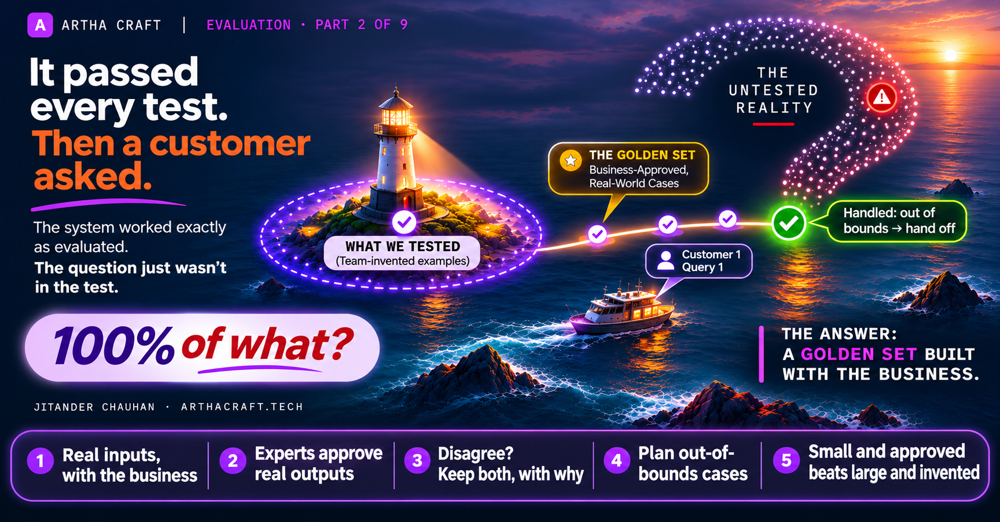

When requirements are clear
Start from what already exists: scope documents, business rules, past cases handled by people, and examples written by domain experts. Each becomes an input with an expected output.
Your first golden set, before you have data: where the cases come from, who decides what correct means, and why a small approved set beats a large invented one.

We once watched a client's LLM feature pass every review. The outputs looked good and the team signed off.
Then it went to production, and the very first question from the very first customer was out of bounds. Nothing in the test data had looked like it.
The system worked exactly as evaluated. The question just wasn't in the test.
I would not call that bad luck. It is what you should expect when you test a model on data that does not look like your users.
Most teams arrive at LLM evaluation from predictive analytics, where you train on a large labelled history, test on the part you held back, and report one accuracy number. That method assumes a single right answer and plenty of past examples, and LLM output has neither: an answer can be right in several ways, and on day one the history does not exist.
So teams test on a dummy dataset or a handful of examples. When that fails, they realise the old method does not fit, but nobody has a replacement, so everyone dabbles with a few more examples here and a quick review there.
Public benchmarks do not fill the gap either. They tell you how good a model is in general, which says little about whether it handles your documents, your rules or your client's definition of correct. An evaluation has to mirror the real inputs it will face, including the awkward ones. [1]
100 percent of what?
A perfect score on the wrong cases proves nothing. What fills the gap is a golden set: a fixed collection of real cases, including the ones you hope never arrive, with an agreed answer for each.
In the terms of Part 1, this is the foundation of the task level, and every check in the rest of this series is scored against these cases.
What that client needed was never more data. They needed the right data, approved by the right people.
Someone should have sat with the business, collected the inputs real users would actually send, and agreed what the output should be for each. Even a small number of approved cases is worth more than a large set nobody signed off, because an approved case is evidence and an unapproved one is a guess.
Where those cases come from depends on how clear the requirements are.
Start from what already exists: scope documents, business rules, past cases handled by people, and examples written by domain experts. Each becomes an input with an expected output.
Correct is defined as you go, so the golden set grows with the requirements. Capture every source of a decision: what was agreed in meetings, client feedback on drafts, expert corrections, and every argument about what the output should be. Each settled argument becomes a case.
Out-of-bounds questions, missing information, ambiguous requests, inputs in the wrong format. Decide in advance what the system should do with each: answer within limits, refuse, or hand off to a person. If you do not write them, the first customer will find them for you.
Not the engineers. We are technologists. The business owner or the domain expert knows what a right answer looks like.
Building test cases with domain experts is standard advice; the best-known guides tell teams to put real experts in front of real data. [2] What the advice rarely says is when experts can do it, and in our experience it is not at the start. Experts rarely know what correct looks like in the abstract. Ask one to write expected answers on a blank page and you get very little, but show them an output and they will tell you immediately what is wrong with it.
That makes approval a loop rather than a single gate. Collect real inputs together, run them through an early version, put the outputs in front of the expert, and turn each correction into an approved case. The first version of the system is how you build the golden set.
Experts will sometimes disagree. When they do, resist forcing a single answer or quietly picking one; record both as acceptable options, then capture why they differ: the policy, the client type, the threshold, the missing fact that sends one expert one way and the other the opposite way.
That reason is the most valuable thing in the case, because it tells the evaluation that both answers are right and under which conditions each applies. A system graded against one "correct" answer will be marked wrong for giving the other, whereas a system graded against both, with the reason, is being tested the way the business actually works.
However carefully you build it, an approved set is a sample, and real inputs will keep arriving that look like none of your cases. The system therefore has to do two things at run time.
First, it has to judge where a new input lands: is it close to an approved case, and which of the accepted options does it match? Second, when the input does not land cleanly, it has to say so. Always give a confidence score, so the user knows how much to trust the answer and when to check it.
A word of caution here: models that report their own confidence tend to be overconfident. [3] A score is only useful if you have tested it, which means asking whether the system is right nine times in ten when it says 90 percent. That test runs against the same golden set, and we return to it in Part 5.
The approved sample has one more use. If you agree it with the business up front, it becomes the acceptance test before go-live. The conversation moves from "does it look good?" to "does it pass the cases you approved?"
A golden set is only as useful as what each case records.
Client data. Real client documents make the best cases, but they cannot go in unchecked. Screen every case for sensitive data first, mask anything you find before the case enters the set, and use the case as is if there is nothing to mask. Security standards make the same point: limit the personal data used in testing to what the test genuinely needs. [4] The case stays realistic without the test set becoming a second, uncontrolled copy of client data.
I cannot give you a number, because the size of a golden set depends on how much the inputs vary.
Sit with the stakeholders and map the parameters that change the answer: client type, document type, product line, region, the conditions where the rules bend. Make sure each meaningful combination has at least one approved case, plus the out-of-bounds cases. A feature with three parameters needs far fewer cases than one with fifteen.
Let coverage decide the size, rather than ambition.
The set starts growing before launch and keeps growing from then on:
People describing what they actually send and expect.
Every wrong answer becomes a new case.
These come from the process the LLM is replacing, often exist long before the feature does, and show real inputs nobody thought to write down. They are client data too, so screen and mask them before use.
Part 3 covers how to grow the set without fooling yourself.
In an established company, the approved set doubles as evidence: who decided what correct means, when, and on what basis, which is exactly what model risk and audit teams will ask for.
When you build for clients, "correct" can differ from one client to the next. Keep shared cases separate from client-specific ones, and agree the acceptance sample in the contract, not after go-live.
For an agent, a case covers more than one input and one answer: it includes the steps it should take, the tools it may use, and where it must stop and ask a person.
The team will always test the questions it can imagine.
The customer will ask the one it could not.
A golden set built with the business narrows that gap before launch, and every production surprise narrows it further.
Jitander Chauhan